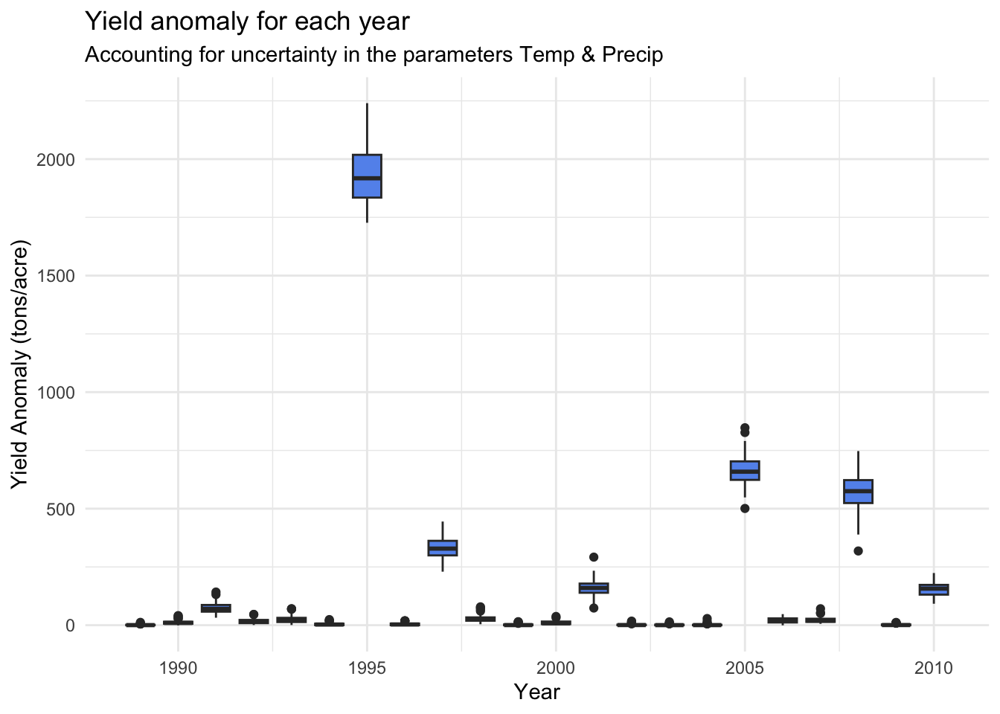

── Conflicts ────────────────────────────────────────── tidyverse_conflicts() ──
✖ dplyr::filter() masks stats::filter()
✖ dplyr::lag() masks stats::lag()
ℹ Use the conflicted package (<http://conflicted.r-lib.org/>) to force all conflicts to become errors
library(dplyr)
# Read in climate dataclim_data <-read.table(here("HW3","data","clim.txt"), header =TRUE)
# ---- Prep clim data for model ----# Group clim data by monthmonthly_clim <- clim_data |>group_by(year,month) %>%summarise(tmin_avg =mean(tmin_c,na.rm =TRUE),precip_total =sum(precip, na.rm =TRUE),.groups ="drop")# Filter clim data for avg temp in FebTemp_Feb <- monthly_clim |>filter(month ==2) |>select(year,Temp_Feb = tmin_avg)# Filter clim data for total precip in JanPrecip_Jan <- monthly_clim |>filter(month ==1) |>select(year,Precip_Jan = precip_total)# Join filtered clim data back togetherclim_data_clean <-inner_join(Temp_Feb, Precip_Jan, by ="year")
1. Develop a profit model for your almond yield
Use your imagination to think about what would make sense Make sure you include parameters You could assume a baseline profit and then adjust according to the anomaly
2. Apply the profit model to your almond yield model
There are many ways to combine the almond yield and profit functions; you can have the profit function “call”/use the almond yield function; or create a wrapper function that calls them in sequence (first the almond yield and then the profit function)
# Apply profit model to each yearalmond_profits <- clim_data_clean |>mutate(profit =mapply( almond_profit,Temp_Feb = Temp_Feb,Precip_Jan = Precip_Jan))# Check out resulthead(almond_profits)
3. Perform a simple informal sensitivity analysis of almond yield profit using at least 2 parameters
# ---- Perform sensitivity analysis on temp and precip ----# Create grid of temp and precip rangetemp_seq <-seq(5, 15, by =0.25)precip_seq <-seq(0, 150, by =5)# Define gridclim_grid <-expand.grid(Temp_Feb = temp_seq,Precip_Jan = precip_seq)# Test sensitivity to temp and precipclim_grid$profit <-mapply( almond_profit,Temp_Feb = clim_grid$Temp_Feb,Precip_Jan = clim_grid$Precip_Jan)# Apply profit model to all yearsalmond_profits <- clim_data_clean |>mutate(profit =mapply( almond_profit,Temp_Feb = Temp_Feb,Precip_Jan = Precip_Jan))
4. Create 2 graphs
- one that shows yield anomaly for each year, accounting for uncertainty in the parameters
n_sim <-100# Create grid of temp and precip rangetemp_sims <-rnorm(n_sim, mean = clim_data_clean$Temp_Feb, sd =1)precip_sims <-rnorm(n_sim, mean = clim_data_clean$Precip_Jan, sd =20)# Apply to 100 simulationsyield_uncertainty <- clim_data_clean |>slice(rep(1:n(), each = n_sim)) |>mutate(Temp_Feb_sim =rnorm(n(), Temp_Feb, sd =1),Precip_Jan_sim =rnorm(n(), Precip_Jan, sd =20),yield_anomaly =almond_yield( Temp_Feb_sim, Precip_Jan_sim,T_Coef1 =-0.015, T_Coef2 =-0.0046,P_Coef1 =-0.07, P_Coef2 =0.0043, I =0.28))# Plot yield anomaly for each year accounting for uncertainty in params (temp and precip)ggplot(yield_uncertainty, aes(x = year, y = yield_anomaly, group = year)) +geom_boxplot(fill ="cornflowerblue") +labs(title ="Yield anomaly for each year",subtitle ="Accounting for uncertainty in the parameters Temp & Precip",x ="Year",y ="Yield Anomaly (tons/acre)") +theme_minimal()

one that show how yield anomaly in general varies with your parameters
# ---- Visualize sensitivity to temp ----# Define range for temptemp_seq <-seq(5, 15, by =0.1)# Define df with precip constantyield_temp <-tibble(Temp_Feb = temp_seq,Precip_Jan =50)# Calculate yield anomaly with temp variedyield_temp$yield_anomaly <-almond_yield(Temp_Feb = yield_temp$Temp_Feb,Precip_Jan = yield_temp$Precip_Jan,T_Coef1 =-0.015,T_Coef2 =-0.0046,P_Coef1 =-0.07,P_Coef2 =0.0043,I =0.28)# Plot how yield anomaly varies with tempggplot(yield_temp, aes(x = Temp_Feb, y = yield_anomaly)) +geom_line(color ="cornflowerblue", linewidth =1) +labs(title ="Yield Anomaly Sensitivity to Temperature",x ="February Temperature (°C)",y ="Yield Anomaly (tons/acre)") +theme_minimal()
# ---- Visualize sensitivity to precip ----# Define range for precipprecip_seq <-seq(0, 150, by =1)# Define df with temp constantyield_precip <-tibble(Precip_Jan = precip_seq,Temp_Feb =10)# Calculate yield anomaly with precip variedyield_precip$yield_anomaly <-almond_yield(Temp_Feb = yield_precip$Temp_Feb,Precip_Jan = yield_precip$Precip_Jan,T_Coef1 =-0.015,T_Coef2 =-0.0046,P_Coef1 =-0.07,P_Coef2 =0.0043,I =0.28)# Plot how yield anomaly varies with precipggplot(yield_precip, aes(x = Precip_Jan, y = yield_anomaly)) +geom_line(color ="cornflowerblue", linewidth =1) +labs(title ="Yield Anomaly Sensitivity to Precipitation",x ="January Precipitation (mm)",y ="Yield Anomaly (tons/acre)") +theme_minimal()
5. Write a short paragraph (in a Quatro document) to summarize you interpretation of your model results (e.g what do ‘take away’ from your model and sensitivity analysis)
Variations in temperature and precipitation can have significant impacts on model performance.
Yield anomaly seems to decrease as temperature increases.
Yield anomaly seems to increase as precipitation increases.